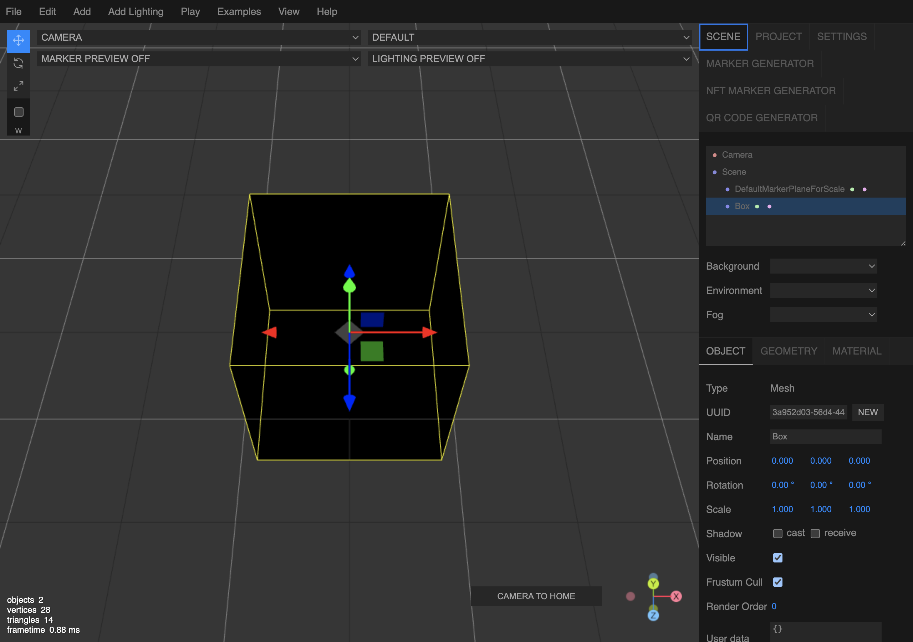
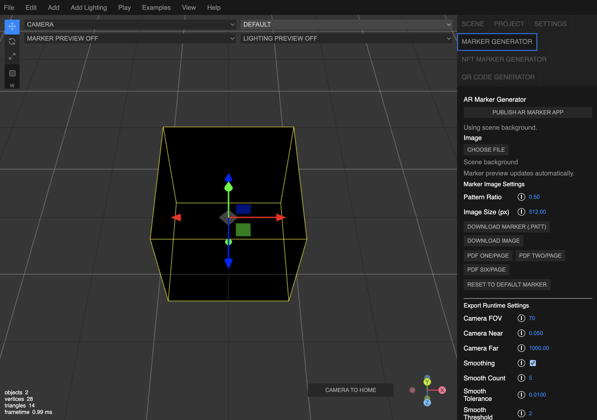
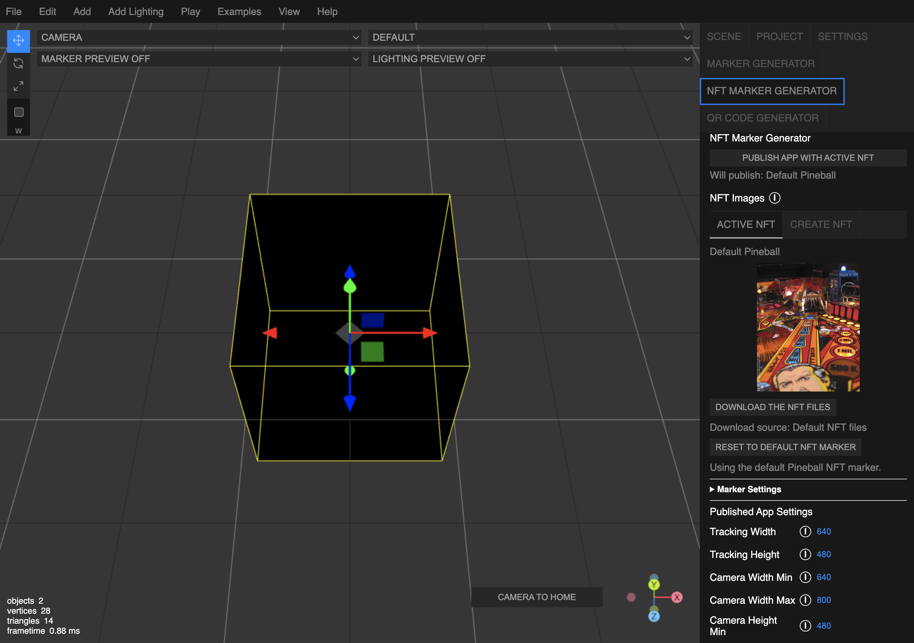
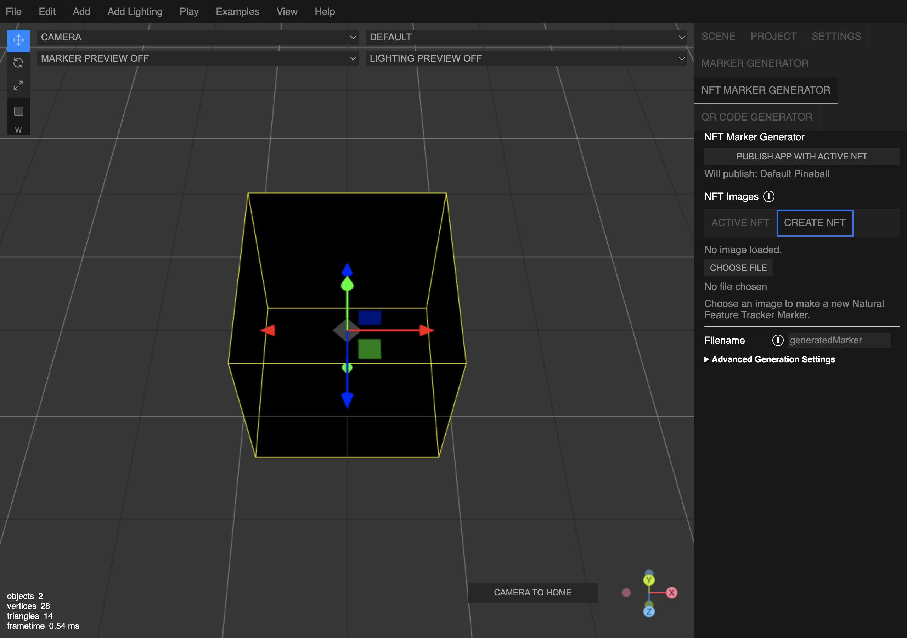
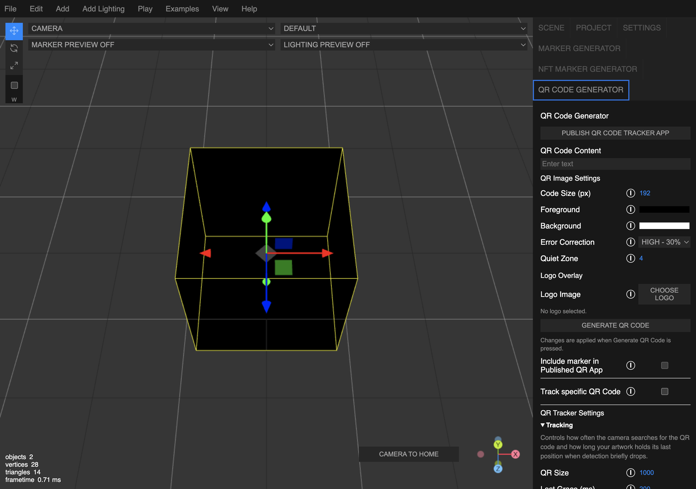
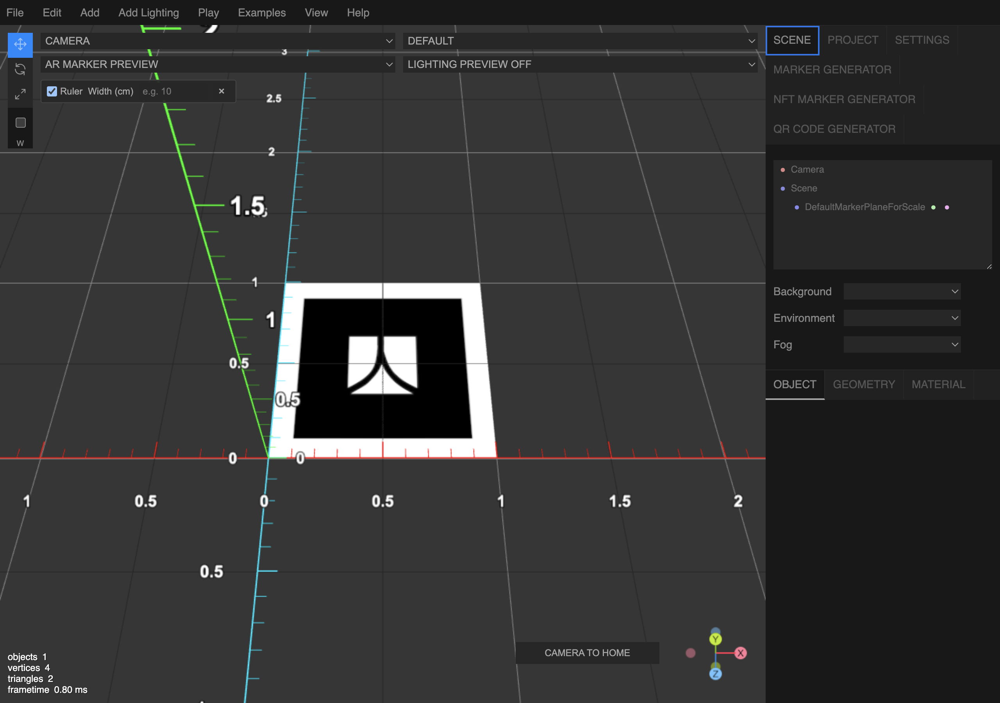

AREditor user manual
AREditor is a browser-based 3D scene editor for preparing augmented reality content. This guide explains how to build a scene, create or select a target, configure tracking, and publish an app.
AREditor has separate publishing workflows for AR markers, NFT image targets, and QR codes. Use the workflow that matches the target you plan to print or display.
Quick start
- Open the editor. Use the button above or the AR Editor link on the home page.
- Prepare your scene. Start from the default template, import or add objects, and arrange them in the viewport.
- Choose a target type. Open Marker Generator, NFT Marker Generator, or QR Code Generator in the right sidebar.
- Set up and check the target. Generate or select the marker, then use the viewport preview to check how the scene sits against it.
- Publish and test. Use that target's publish button, download the ZIP, and test the app with the same marker or QR code.
A published app needs camera permission. Serve it from https:// or localhost; opening the exported page directly as a file:// URL usually will not provide camera access.
The home page also provides the built-in AR marker, NFT image, and QR code files as sample targets.
The editor interface
The viewport is where you compose and inspect the 3D scene. The menus run across the top, transform tools sit at the left, and the task-specific panels are in the right sidebar.

| Area | What it is for |
|---|---|
| Top menus | File, Edit, Add, Add Lighting, Play, Examples, View, and Help provide project, object, and editor commands. Use Help for the keyboard-shortcut reference. |
| Left toolbar | Select an object and use the move, rotate, or scale tool to adjust it in the viewport. The W control switches the transform space. |
| Viewport controls | Choose a camera view, shading mode, marker preview, and lighting preview. Drag in the viewport to orbit, pan, or zoom the scene. |
| Right sidebar | Scene manages the scene and selected object; Project controls project and renderer options; Settings contains editor preferences; the three generator tabs prepare and publish targets. |
Build and arrange a scene
- Start or import content. Use the File menu to create a template or import a model. The Add and Examples menus are also useful for adding objects.
- Select an object. Choose it in the Scene list or click it in the viewport. The Object, Geometry, and Material panels show its available properties.
- Position it. Use the move, rotate, and scale tools. Adjust the transform gizmo or the object's numeric properties for more precise placement.
- Set the scene appearance. The Scene panel includes background, environment, and fog controls. Add lights from the Add Lighting menu when the model needs them.
- Check project options. The Project panel contains the project title, editable and VR options, and renderer settings. Settings includes language, viewport preferences, shortcuts, and history.
Use the File menu's save and export commands to preserve your work or export a scene. Check the dialog for the format and options available in your current editor version.
Create and publish an AR Marker app
An AR marker uses a high-contrast pattern. The Marker Generator can make one from the scene background or use a chosen image as its source.

- Open Marker Generator in the sidebar and choose the scene or image source for the marker.
- Adjust Pattern Ratio and Image Size (px) if needed. The marker image updates when the source or settings change; download the pattern and image together so they match.
- Use Download Marker (.patt) for the tracking pattern and Download Image for the printable image. The PDF buttons prepare layouts with one, two, or six markers per page.
- Use Reset to Default Marker to return to the built-in marker.
- Set the app's camera and tracking options, then choose Publish AR Marker App. The app is packaged for download.
Test the published app with the exact marker image used to create its pattern. Keep it flat and well lit; glare, blur, or changing the print can make detection unreliable.
Use or create an NFT marker
NFT tracking uses visual features in an image rather than the black-and-white pattern used by an AR marker.

Publish the active target
- Open NFT Marker Generator and check the active marker shown in the panel. The built-in default is available immediately.
- Use Download the NFT Files to download the active target's files, or Reset to Default NFT Marker to restore the built-in target.
- Review the “Will publish” status at the top of the panel, adjust export options if needed, and choose Publish App with Active NFT.
Create a target from your own image

- Open the Create NFT sub-tab and choose an image file.
- Set the output filename and expand Advanced Generation Settings only if you need to change the defaults.
- Choose Generate NFT Marker and wait for generation to finish. A new target becomes active only after successful generation; an unfinished or failed generation does not replace the current active target.
- Return to Active NFT, confirm the target you want to use, then download its files or publish the app.
Images with clear detail and distinct features generally make better tracking targets than plain, repetitive, reflective, or blurry images.
Generate and publish a QR Code app
The QR Code Generator creates a QR image and configures the tracker that detects it. The generated code's content and printed image must match what the published app expects.

- Enter the text or URL to encode in QR Code Content.
- Set the image size, foreground and background colors, error-correction level, and quiet zone. A quiet zone of four modules and strong contrast are good starting points.
- Optionally choose a local PNG, JPEG, or WebP logo. A logo covers part of the code, so use a modest size and consider a higher error-correction level.
- Choose Generate QR Code. Changes to the content and image settings are not applied until you generate again. Download the resulting QR image and print it clearly.
- Enable Include marker in Published QR App if the published ZIP should include the last successfully generated QR image. Regenerate after changing the code so the bundled image is current.
- Enable Track specific QR Code if the app should respond only to the exact content entered, then choose Publish QR Code Tracker App.
QR tracker settings
The expandable groups let you tune the tracker and the model it displays. Defaults are suitable for many projects; change a value when you have a specific reason and test the published result.
- Tracking — QR size hint, lost grace period, scan and pose intervals, detection hold, and maximum camera size.
- Camera — camera and projection properties, including near and far clipping planes.
- Model and Visibility and Scale — how the model is selected, positioned, shown, and scaled relative to the QR target.
- Material and Cube, Lighting and Text, and Pose — options for the rendered model and its tracked pose.
- Size-Based Scaling, Pose Smoothing, and Performance Fallback — optional behavior for adapting scale, reducing jitter, or handling slower devices.
Marker preview and ruler
Use the Marker Preview control above the viewport to choose AR Marker, NFT Marker, or QR Marker preview. A preview helps you check the scene's placement against its target; it is not a substitute for testing the published app with a camera.

- The ruler is available when the preview is set to AR Marker or NFT Marker. It is hidden for other preview types.
- Turn on Ruler to show it. The red X and blue Z axes extend in both positive and negative directions; the green Y axis extends in the positive direction.
- Tick labels use marker-width units. Enter the printed marker width in centimeters to add centimeter labels. Clear the width or set it to zero to hide those labels.
- The ruler is an editor-only measuring aid. It is not included in the published app.
Publish and test your app
- Open the publisher that matches your target and verify its marker or QR content before exporting.
- Adjust camera settings for that publisher if necessary. Near and far values are configured separately for AR Marker, NFT, and QR apps; changing one publisher's settings does not change the others.
- Keep the camera near plane above zero and below the far plane. Increase the far plane if distant content is clipped; lower the near plane if close content disappears.
- Use the publisher's button to download the app ZIP. Extract it and serve the included page from a web server with camera access enabled.
- Open the page in a supported browser, allow camera permission, and test it using the same physical marker or QR image you prepared.
The AR Marker publisher labels these Camera Near and Camera Far; NFT uses Projection Near and Projection Far; QR has its own near and far values in the Camera settings group. Use the controls in the publisher you are exporting from.
Troubleshooting
The camera does not start
Open the published app from HTTPS or localhost, grant camera permission in the browser, and make sure another application is not using the camera.
The AR marker is not detected
Use the matching downloaded pattern and image, print at a clear resolution, keep the marker flat, and avoid glare or low light. If you changed the source image, generate and download the marker again.
The NFT target is not detected
Check that the intended target is shown as the Active NFT and is the one printed. Use a sharp, detailed image with distinct features and test it in even lighting.
The QR app sees a different code or no code
Confirm the printed QR content matches the generator. If Track specific QR Code is enabled, it must match exactly. Regenerate after changing code settings, keep strong contrast and a quiet zone, and avoid covering too much of the code with a logo.
Objects disappear or are clipped
Check the object's scale and position, then adjust near and far in the camera settings for the publisher you are using. The far value must be greater than the near value.
My QR image does not reflect the latest settings
QR content and image settings are applied when you press Generate QR Code. Generate again before downloading the image or publishing with the marker included.